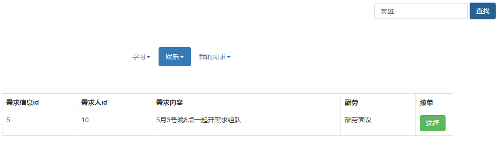

-
Happy Courier
Happy Courier是一个实现校园快递互帮互取、学习娱乐需求信息的发布功能的网站。主要分为三个模块：
（1）发布自己的快递信息模块。
（2）抢单，帮别人取快递模块。
（3）学习娱乐需求信息发布与deal模块。 -
登陆、注册模块
注册模块：
加入了表单验证，用户凭借手机号和学号注册。
登陆模块：
用户凭借注册时的手机号或学号任意一个作为用户名登陆。
加入了Cookie机制，当用户选择记住密码时，下次直接登陆即可。 -
主界面
主界面实现了个人中心信息的提交与回填，个人头像的上传。中间部分采用轮播展现校园风采或者团队文化。下面三个模块为对应三个模块的入口链接。
-
个人中心
点击编辑，可对个人资料进行编辑，编辑完成点击提交，数据通过AJAX提交到后台，表单禁用。点击编辑时，表单解禁。
-
头像上传
当点击主页的头像时，弹出选择头像的对话框，用户选择自己喜欢的头像即可。
-
发布取件信息
用户发布自己的取件信息，对取件的地方、快件种类以及送达地均采用下拉菜单选取，方便用户输入。并对每项表单采用了非空验证，当输入有一项为空时，点击提交会弹出该项不能为空提示，光标聚集到该项。
-
帮送快递
当用户选择了自己的方便送快递的区间之后，系统会筛选出一定的快递任务给他，当他点击选择后。便可在自己的正在进行任务列表（该部分与已完成任务列表还未实现）中查看该订单的完整信息，包括发布人的联系方式等等。
-

百事帮主页
百事帮模块细分为三部分。第一部分为学习需求查询模块。第二部分为娱乐需求查询模块。第三部分为发布自己的需求部分。
-
学习模块
用户输入关键字，服务器返回对应查询数据动态创建表单，将结果展现给用户。用户也可以根据自己的需要选择接受，实现原理与帮取快递部分相似。
-
娱乐模块
用户输入关键字，服务器返回对应查询数据动态创建表单，将结果展现给用户。用户也可以根据自己的需要选择接受，实现原理与帮取快递部分相似。
-
需求发布
发布自己的需求，表单中也加入了非空验证
-

刚才发布的娱乐信息
-
谢谢^_^
Happy Courier